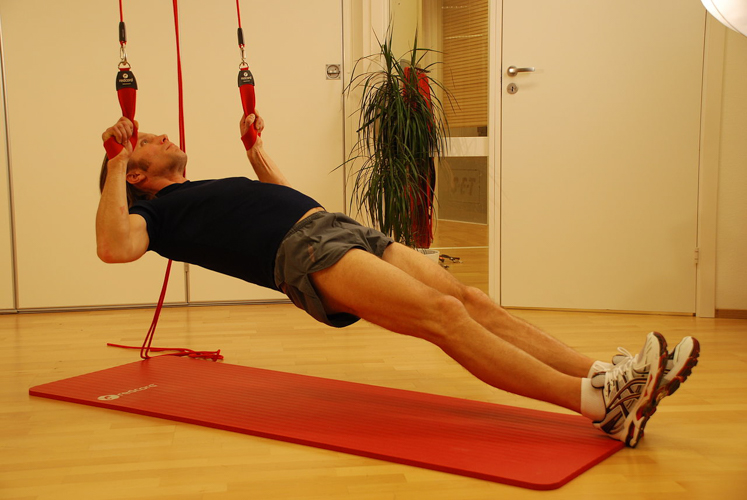

These are a body of movements that all pertain to exercises that involve pulling an object towards your body, or pulling your body towards some object. Pulling movements can be further sub-categorised by the axis in which the movement occurs.
In calisthenic bodyweight training these movement patterns generally comprise vertical pulling movements and horizontal pulling movements, which we cover below:
Vertical Pulling
In vertical pulling patterns, we are either pulling ourselves towards something overhead, or pulling something at our feet towards the centre of our body. Pullups are examples of the former, while weighted deadlifts are good examples of the latter.
As we are dealing with just our bodyweight, our focus is mainly on the pullup family of exercises when it comes to vertical pulling, where regardless of semantics (is it a pullup or a chinup, etc) we are dealing primarily with pulling our body towards a bar and reaching over chin over it.
Horizontal Pulling
Horizontal pulling movements exercise similar but not idential muscle groups to vertical pulling movements, and thus make a good complement to them. With horizontal pulling in bodyweight exercising, we are mostly concerned with bodyweight rows where with our body positioned horizontally we pull ourselves towards something above our chest.